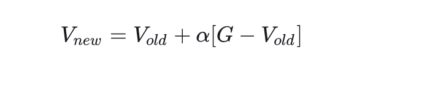
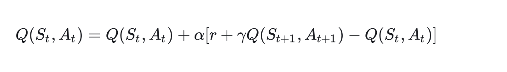
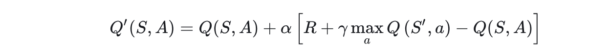

强化学习算法分两种，（工作A）一种是预测每个状态的价值V，（工作B）一种是预测在每个状态下，所有可能出现的动作的价值（动作价值Q）
MC蒙特卡洛算法
完成A工作，增量更新，需要收集很多样本数据来参加训练，预测每个状态的价值

时序差分TD
工作A，可以看作是蒙特卡罗的进化版，预测每个状态的价值
一步一回头，用下一步的估值计算当前状态的估值
Qlearning
工作B，直到某个状态下所有工作值的奖励值，因为我们既然要做决策，那只要知道某个状态下所有动作值的奖励值，也就是知道了具有最高奖励值的是哪个动作，然后直接采取这个动作就行。所以针对TD的推导公式，我们不预估V值，改为预测Q值

SARSA
既然我们的目标是选取最大收益，所以，我们肯定会选择一个能够获得最大Q值的动作。也就是说，在实际选择中，我不可能选择不是最大Q值的动作。所以，我们应该用所有动作的Q值的最大值替代V(St+1)
DQN
预测在每个状态下，所有可能出现的动作的价值
处理连续，加上神经网络
对于状态S(t)，我们使用该神经网络来预测该状态下各个动作可以获得的动作价值函数Q(S,A)

Q(S,A)和Q’(S,A)应该是一样的，所以我们就把它们作差后当做是神经网络的误差，利用该误差进行梯度下降即可训练出一个能够预测各个动作随代表的动作价值的神经网络。
DoubleDQN
当error相同时，DoubleDQN算法用了两个网络对Q进行预估，取最小的那个
策略梯度PG
对于每一个状态，我们直接算出每一个动作可能出现的概率不行吗？然后直接把概率最大的动作作为当前状态应该采取的动作不就行了吗？似乎这样子就可以跳过求解V和Q这两个值了。如果说DQN是一个TD+神经网络的算法，那么PG是一个蒙地卡罗+神经网络的算法。
如何设计损失函数以便训练神经网络？
计算一个回合里神经网络预测的某个状态下实际采取的动作会被神经网络采取的概率，然后将这个概率乘奖励值，即可知道这个动作对奖励值得影响情况，如果发现采样这个动作对一个回合的平均奖励值有帮助的话，那么就提高这个这个动作的概率，否则降低这个动作的概率。
DDPG
只要求什么动作使得一个回合效率最大
对于状态S(t+1)和使用神经网络actor预测得到的动作a(t+1)，神经网络的输入，状态和动作，而不是只输入状态，与DQN不同

Q(S,A)和Q’(S,A)应该是一样的，所以我们就把它们作差后当做是神经网络的误差，利用该误差进行梯度下降即可训练出一个能够预测各个动作随代表的动作价值的神经网络。根据这个价值我们即可进行决策。